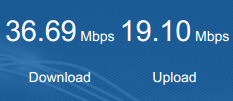
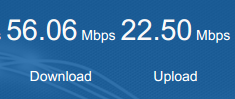

| Lubuntu
linux Tips |
Faster internet
broadband tweak |
| Stabilise and increase your
broadband internet speed with this tweak. This tweak is quite well known. It involves adding some lines into /etc/sysctl.conf You can add/change quite a number of things, but the ones that made the most difference were these; /etc/sysctl.conf # add these lines..
# Speed Teaks net.core.rmem_max = 16777216 net.core.wmem_max = 16777216 net.ipv4.tcp_rmem = 4096 65536 16777216 net.ipv4.tcp_wmem = 4096 65536 16777216 net.ipv4.tcp_window_scaling = 1 net.ipv4.tcp_sack = 1 # End Speed Tweaks The last line (net.ipv4.tcp_sack = 1) is quite important. Some users turn this off, but for me, it causes instability (throughput suddenly pauses in the middle of a download) so I leave it on. And here is an example of a test at https://comparite.ch/speed (comparitech donates some money to worthy
causes per user)
Before After  |